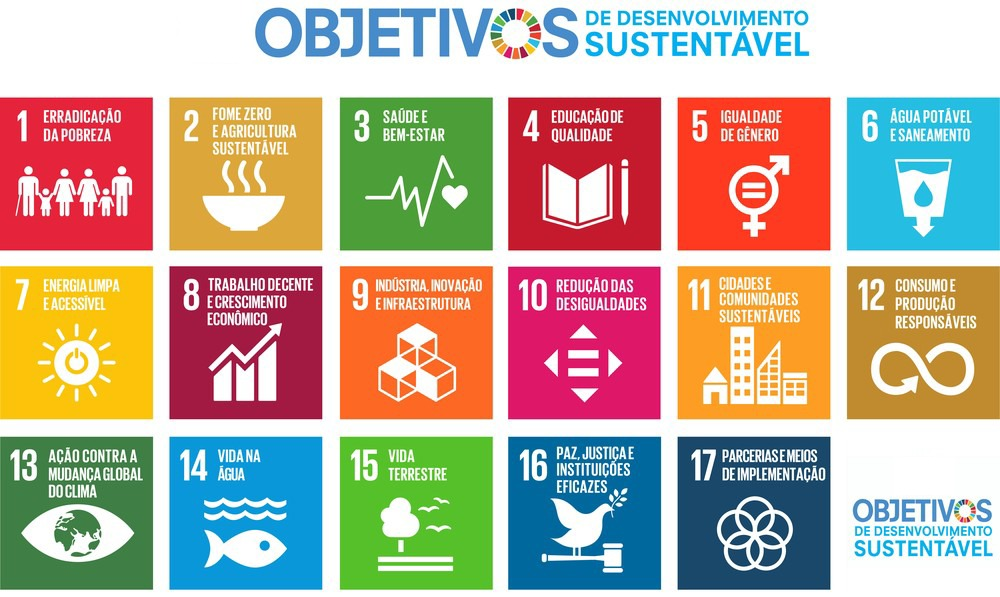
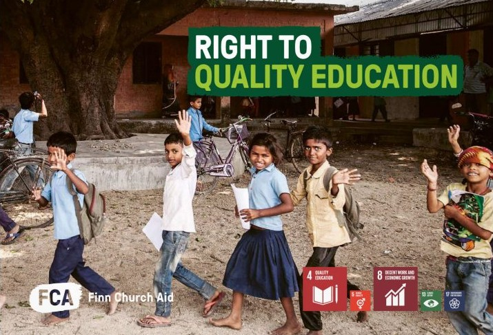

"Educação não transforma o mundo. Educação muda as pessoas. Pessoas transformam o mundo." Paulo Freire.
A Educação, é um direito básico e fundamental para todo ser humano. É com ela que se molda o futuro, evita-se o passado, e corrige o presente.

São por essas e outras razões que a ONU (Organização das Nações Unidas), instituiu, por meio das ODS, que são metas traçadas pela organização, visando assegurar direitos humanos básicos e o desenvolvimento sústentavel da humanidade, o objetivo de "Assegurar a educação inclusiva e equitativa e de qualidade, e promover oportunidades de aprendizagem ao longo da vida para todas e todos".

O plano é que até 2030, seja ofertado a todos um ensino de qualidade e acessível, visto a extrema desigualdade econômica e social que ainda assola grande parte da população mundial.